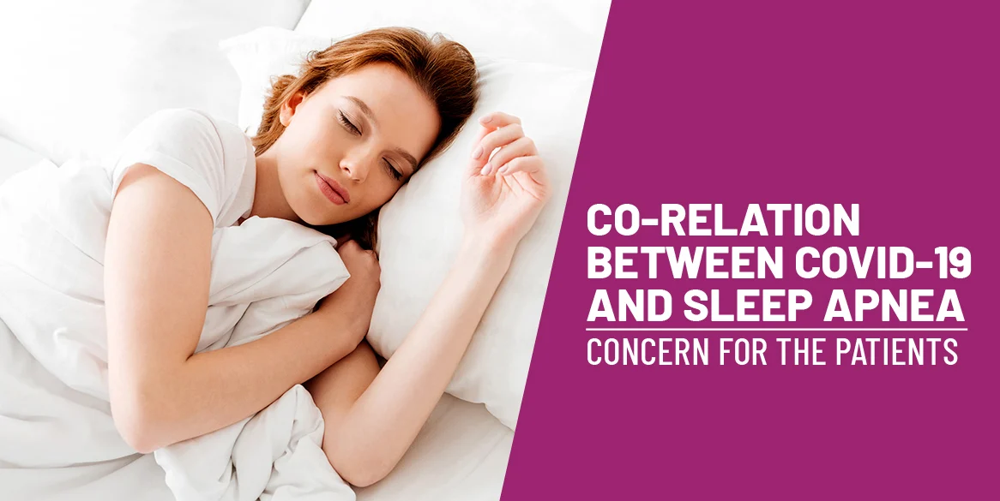

Co-relation between COVID-19 and Sleep Apnea: Concern for the patients
The second outbreak of covid-19 is not only the cause of concern for the healthcare industry; it is putting undue pressure on netizens also. This coronavirus is particularly complicated for old people and for those who have pre-existing health conditions. It is necessary to look after sleep health because research has claimed that Obstructive Sleep Apnea can be a risk factor for COVID-19. Here is some relevant information about risk factors caused due to Obstructive Sleep Apnea during coronavirus.
Do people with OSA are at more risk for coronavirus?
Since the virus is new and we are still figuring out ways to understand how it works and whom it affects the most. However, we have some information about the two significant factors related to sleep apnea which can cause severe risk for complications from coronavirus. These two factors are termed as poor health conditions and age. Sleep deprivation is evident as the third risk factor associated with pre-existing sleep problems. Therefore, people who have sleep problems such as sleeplessness; severe snoring, etc must go for the sleep test to get sure about their condition.
Underlying Health Conditions
People who have underlying health conditions are more likely to have a higher mortality rate. These conditions include diabetes, cardiovascular disease, respiratory disease, and chronic lung diseases such as COPD and OSA. According to the research, the fatality rate of patients who has other underlying health problems such as diabetes ranges from six to ten percent. The numbers are exponentially more as compared to healthy patients. Obstructive Sleep Apnea has also been associated with other conditions, such as cardiovascular disease and diabetes; these patients are included in this higher risk category.
Age
Right from the starting when the coronavirus wave started, it was focused on the old people mostly. However this time, it has affected more youngsters as compared to old people. Older patients are more likely to pneumonia which can be proved deadly in the case of the corona. Some doctors have claimed that the correlation between pneumonia and age-related weakening is due bad immune system and enhanced inflammation. Obstructive People who are over forty are more prone to Obstructive Sleep Apnea. Older patients with sleeping issues are susceptible to experiencing complications from the COVID-19. There older people need to be more careful.
Therefore, a person needs to get the sleep test done to avoid any complications during COVID-19. In addition to the guidelines provided to prevent the occurrence of coronavirus, people who are already infected need to add this as an important component.
Get Plenty of Sleep
Research tells us that sleep is important to keeping the immune system strong and fighting off illness. Adequate sleep also helps your body recover from sickness. It is important not just to go to bed early, but to ensure you are getting quality rest. Research says that sleep is necessary because it heals our body, improves the immune system, and helps in making WBC’s. Adequate sleep also helps in recovering the body at a faster pace. Therefore, it important to maintain a sleep-walk cycle also, ensure that the quality of sleep you’re getting is beneficial for the body. In the case of sleeplessness and symptoms of Obstructive Sleep Apnea, get your test done. Facing some serious sleeping issues? Visit the sleep specialist near you and get the sleep test done today.